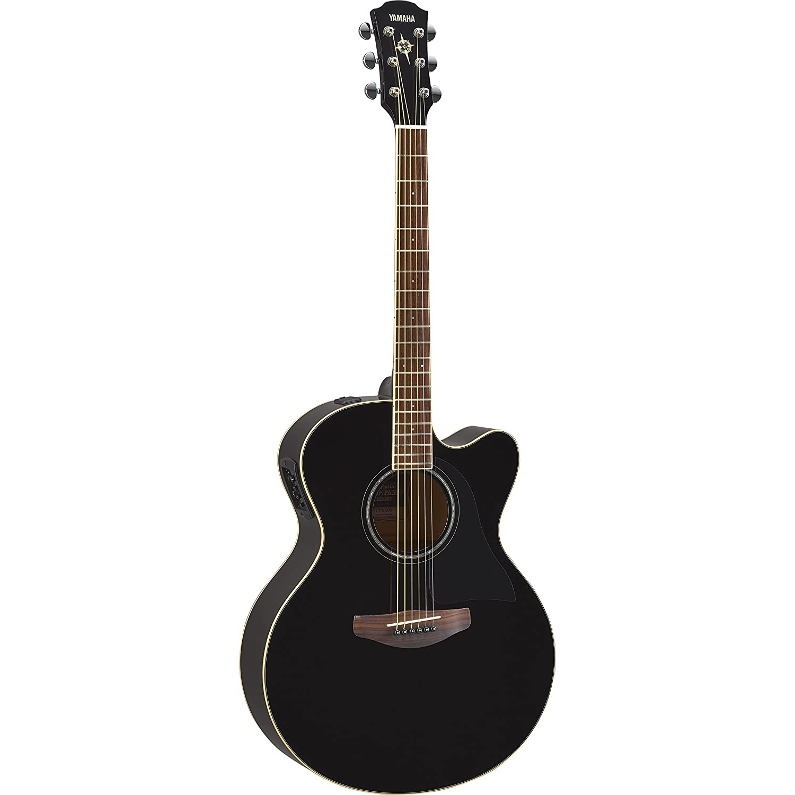

Gitarlar:
-
Akustik Gitar: Bu tür gitar, telleri doğrudan gövdede bulunan bir ses deliği aracılığıyla sesi amplifikasyon olmadan çıkaran bir enstrümandır. Genellikle çeşitli müzik türlerinde kullanılır.
-
Elektro Gitar: Elektrikli gitarlar, manyetik alıcılar ve amplifikatörler aracılığıyla sesi yükselterek çalan enstrümanlardır. Genellikle rock, blues, pop ve metal gibi türlerde kullanılır.